Our history
A legacy ofdedication.
Over five decades of wells, pumps and tanks for homes and businesses, first as Capital Well Drilling, then as Raney’s Well & Pump Service.
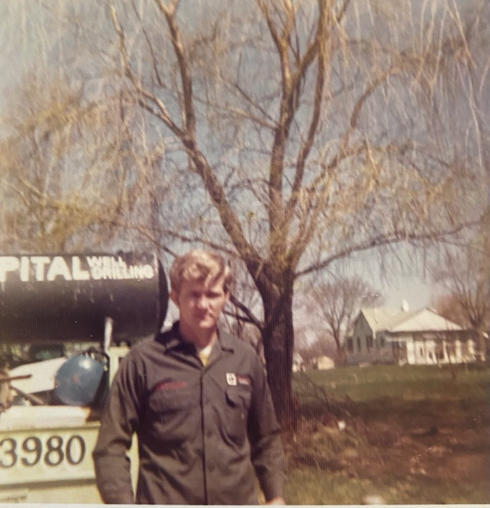
1968
Home from the Army
After an honorable discharge in July 1968, following a year in Vietnam, the founder found that going back to his old factory job felt confining. He wanted something more.
1972
Capital Well Drilling
In March 1972 an opportunity came up: drilling water wells and installing pumps and tanks for homes and businesses. With no prior knowledge of running a business, he and his wife took it. They earned licenses in Illinois, Arkansas and Missouri and learned the trade firsthand.
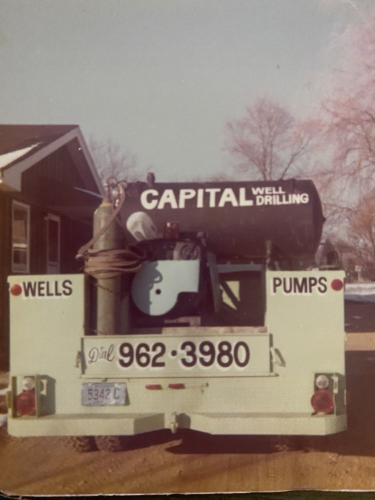
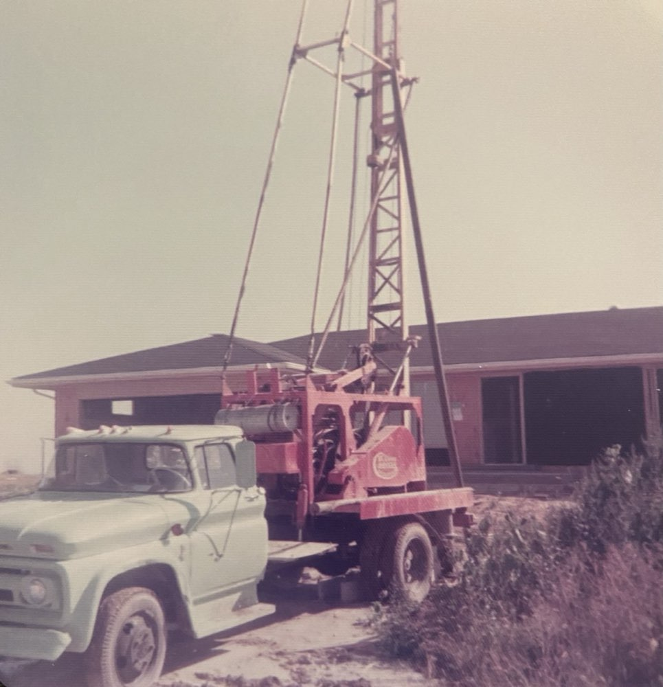
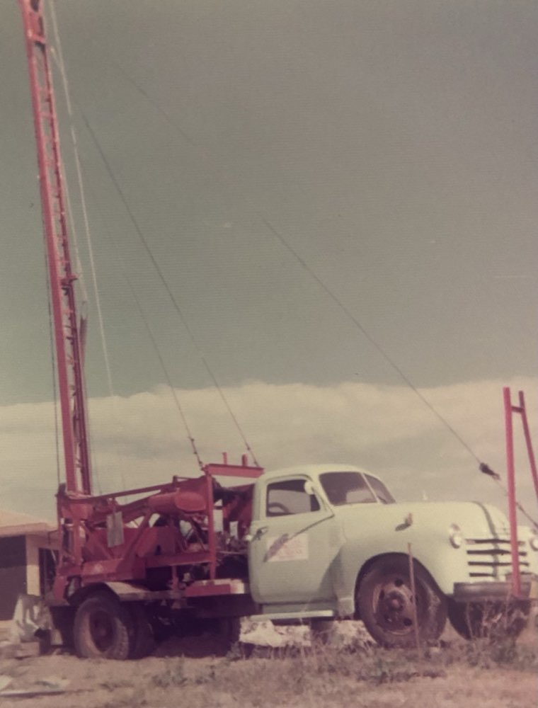
7 days
A week, for many years
Determined to succeed, the couple dedicated themselves to the craft and worked seven days a week for many years, facing the challenges as they came.
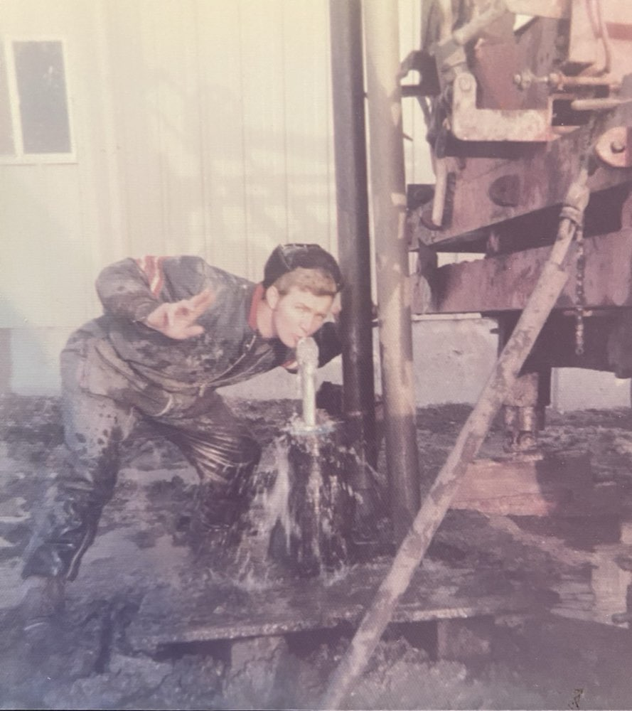
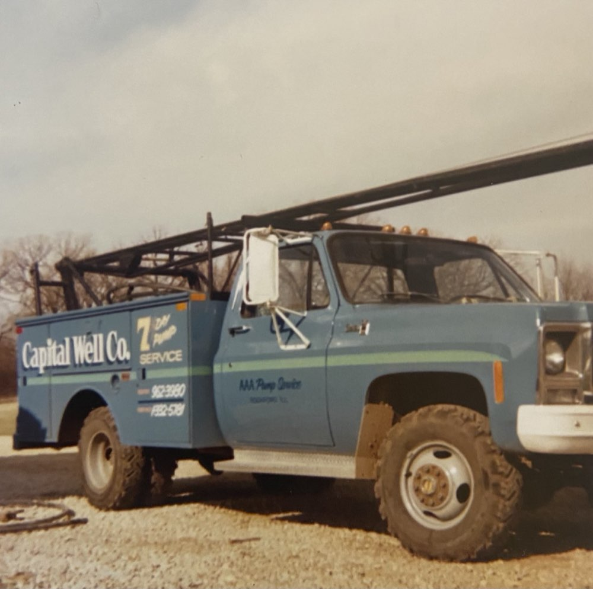
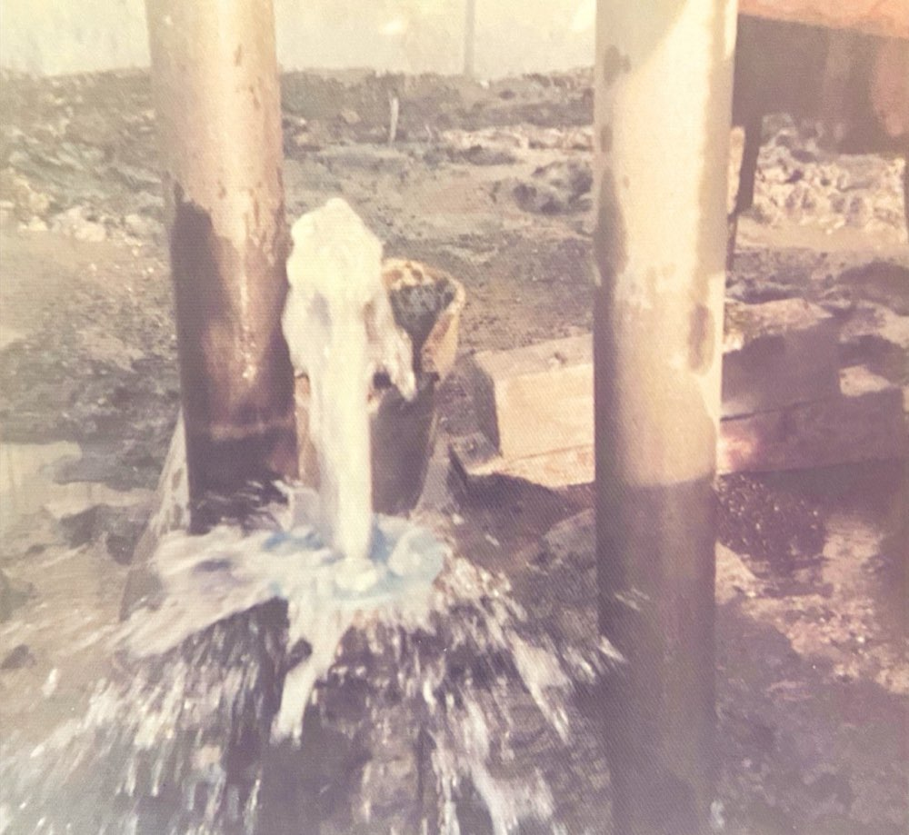
1981
Raney’s Well & Pump Service
In 1981 the name changed to Raney’s Well & Pump Service. The commitment to good work and customer satisfaction stayed the same.
Today
The next generation
When health issues forced the founder into retirement, his son Jason Raney, who had worked alongside his parents since high school, stepped up to carry on the family tradition. Jason became licensed too. Cheryl Raney continues to manage the bookkeeping.
“Throughout the years, we owe our success to the unwavering support of our loyal customers.”
Photo gallery
Through the years…


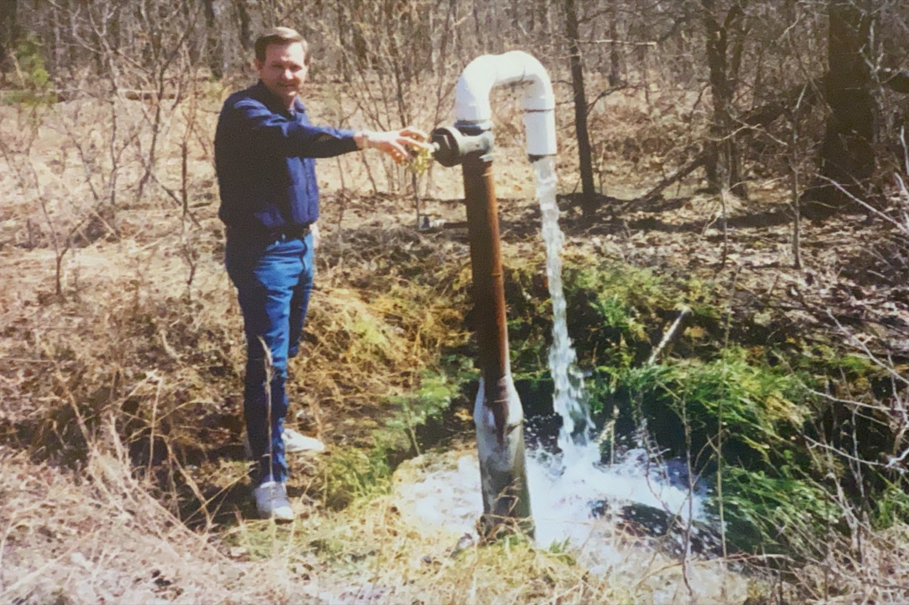
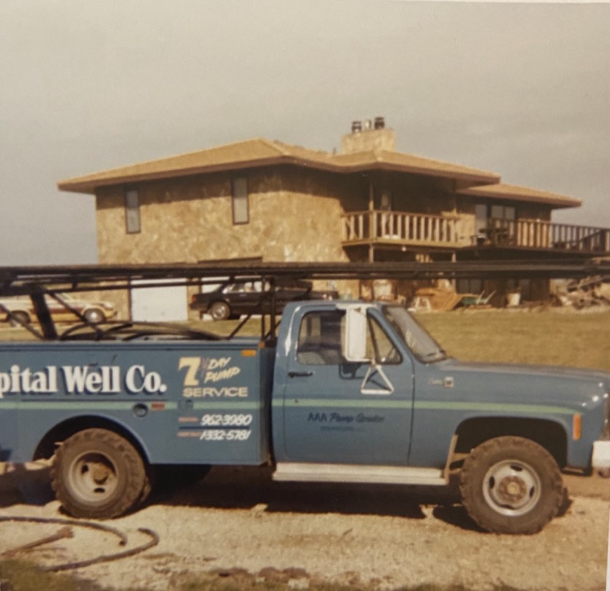
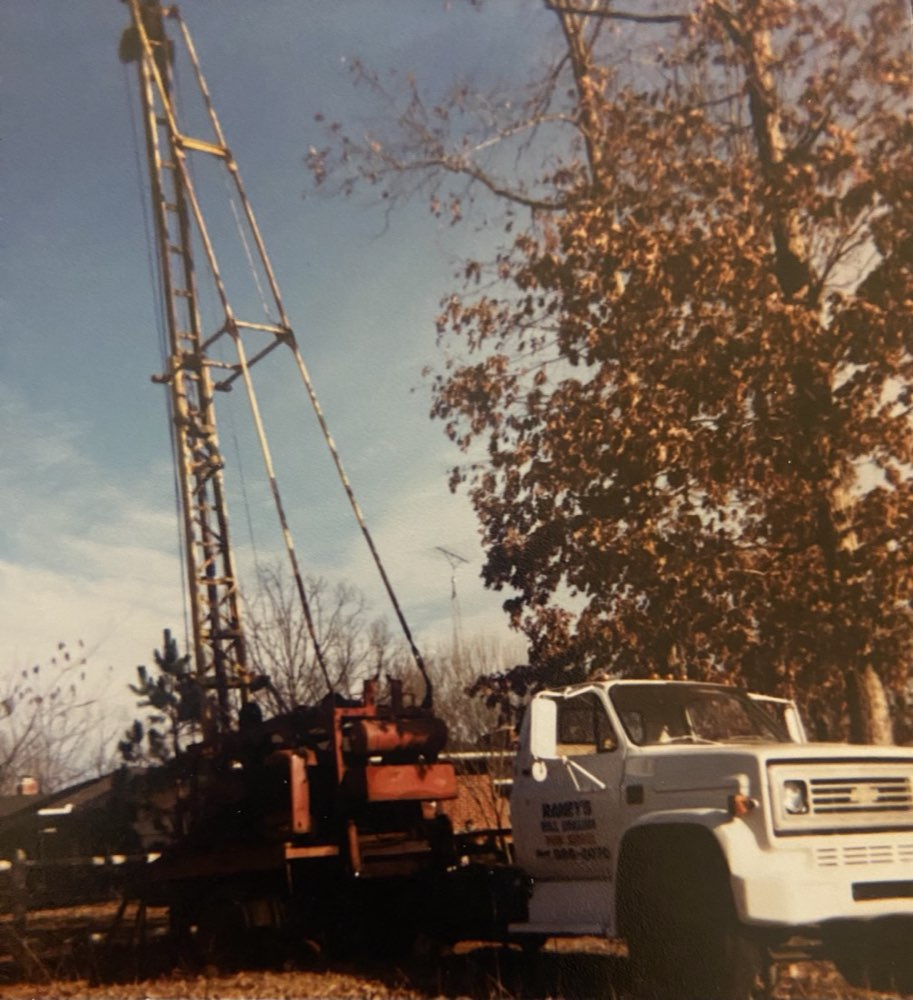
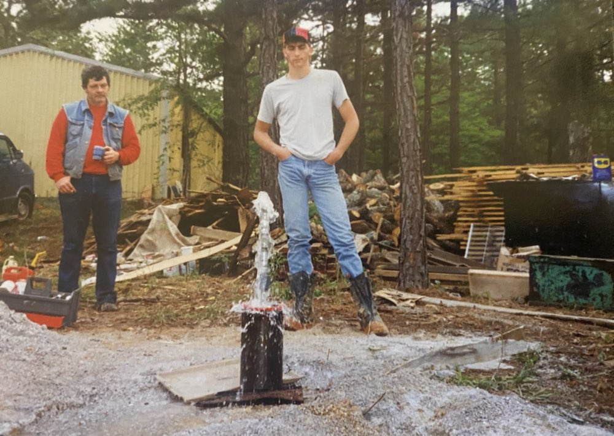
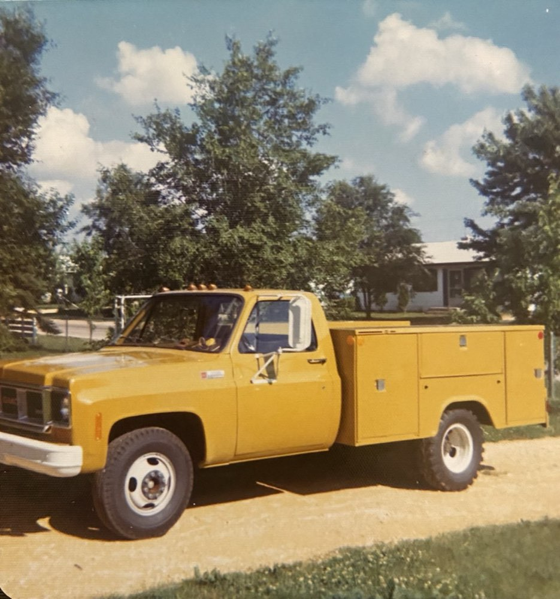

Fifty years on, still a phone call away.
Mon – Sat 7 am – 7 pm · Sundays by appointment.